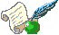

Programmation dans Anatomist: liste des commandes et syntaxe |
 |
La syntaxe des commandes est celle des arbres de la librairie
graph de Dimitri Papadopoulos:
La syntaxe est connue d'Anatomist (chaque commande déclare la syntaxe qu'elle attend).*BEGIN TREE syntaxe
attribut1 valeur1
attribut2 valeur2
...
*END
| int | 12 |
| float | -134.654 |
| string | toto et tutu |
| int_vector | 1 20 -2 4 87 |
| float_vector | 1.2 -3.4 0.123 -12. |
| dictionary | { '__syntax__' : 'dictionary', 'an_attribute' : [ 1, 5.3, 'value' ] } |
Les commandes sont encapsulées dans des arbres imbriqués a priori sur 2 niveaux: le premier précise si la commande doit être exécutée ou annulée: syntaxe EXECUTE ou UNDO. Le second niveau est la commande elle-même. Ex:
Les objets et fenêtres sont manipulées en interne dans Anatomist par leurs pointeurs. Evidemment ce format n'est pas exportable dans les entrées/sorties disque. On passe donc par une conversion pointeur - identifiant entier, effectuée par les classes Serializer et Unserializer. Le principe est qu'un pointeur en mémoire est identifié depuis les commandes par un entier. L'entier est attribué au pointeur depuis sa création, par la commande qui résulte en la création de pointeur (nouvel objet chargé ou crée par fusion, nouvelle fenêtre ouverte, etc.). Ces commandes ont généralement un attribut "res_pointer " qui donne l'identifiant entier qui sera ensuite utilisé pour référer à ce pointeur (objet, fenêtre, référentiel...).*BEGIN TREE EXECUTE
*BEGIN TREE LoadObject
filename toto.ima
res_pointer 1
*END
*END
Attention: dans les "scripts" de commande, ne jamais confondre des identifiants d'éléments de types différents (par exemple un ID de fenêtre dans une liste d'objets), c'est pas du tout blindé pour le moment et ça doit pouvoir faire planter méchamment.*BEGIN TREE EXECUTE
*BEGIN TREE AddObject
objects 1 2 3
windows 100 101
*END
*END
| object | int | objet dont on demande les bornes de la texture |
| ref_id | int | ID du référentiel (s'il n'existe pas, un nouveau référentiel est créé) |
| objects | int_vector (optionnel) | |
| windows | int_vector (optionnel) | |
| central_ref | int | non nul si on désigne le référentiel central (indestructible) d'Anatomist |
| filename | string (optionnel) |
Nouveau dans Anatomist 3.1 fichier contenant des information supplémentaires sur le référentiel: en particulier un nom et un UUID (identifiant unique). Si l'UUID lu depuis ce fichier existe déjà dans anatomist, le référentiel n'est pas recréé (sinon l'identifiant ne serait plus unique). On peut donc utiliser la commande AssignReferential juste pour charger des informations complémentaires sur un repère existant. Ce fichier est au format de type .minf (bien que l'extension soit généralement .referential). |
| ref_uuid | string (optionnel) |
Nouveau dans Anatomist 3.1 Précise optionnellement qu'on veut utiliser un référentiel précis, d'identifiant unique (et persistant) connu, et déjà présent dans Anatomist. Ce paramètre est généralement incompatible avec le paramètre filename parce que l'UUID trouvé dans le fichier est potentiellement différent de celui précisé ici. |
| windows | int_vector | |
| zoom | float (optionnel) | facteur de zoom (1=normal) |
| observer_position | float_vector (optionnel) | position de la caméra (3 coords) |
| view_quaternion | float_vector (optionnel) | rotation (4 composantes normées) |
| slice_quaternion | float_vector (optionnel) | rotation du plan de coupe oblique (4 composantes normées) |
| force_redraw | int (optionnel) | force l'affichage effectif de la vue: par défaut les vues sont réaffichées après un petit délai de manière à n'effectuer qu'un seul affichage après plusieurs modifications. En mode "film", on peut vouloir être sur que l'image a été remise à jour et enregistrée. |
| cursor_position | float_vector (optionnel) | fixe la position du curseur lié, donc du plan de coupe (cf LinkedCursor) |
| boundingbox_min | float_vector (optionnel) |
Nouveau dans Anatomist 3.1 fixe la boîte englobante du champ de vue (partie min) dans le système de coordonnées de la fenêtre |
| boundingbox_max | float_vector (optionnel) |
Nouveau dans Anatomist 3.1 fixe la boîte englobante du champ de vue (partie max) dans le système de coordonnées de la fenêtre |
| name | string | nom de la palette dans la liste |
| colors | int_vector | vecteurs de couleurs RGB (composantes à la suite) |
| color_mode |
string (optionnel) |
"RGB" ou "RGBA" |
| remove_file | int | flag présisant si Anatomist doit effacer le fichier pipe nommé après fermeture |
| windows | int_vector |
| window | int | Fenêtre depuis laquelle les paramètres des contrôles doivent être ouverts |
| show | int | 0: fermer, 1: ouvrir |
| type | string | "Axial", "Sagittal", "Coronal", "3D", "Browser", "Profile" | |||
| res_pointer | int | ID de la fenêtre nouvellement créee | |||
| geometry | int_vector (optionnel) | position et taille de la fenêtre: x, y, w, h | |||
| block | int (optionnel) | Nouveau dans Anatomist 3.0. Permet d'insérer la nouvelle
fenêtre dans un "bloc" qui en contient éventuellement plusieurs.
Par défaut (bloc=0) la fenêtre n'est pas dans un bloc. Si
bloc n'existe pas encore, un nouveau bloc est créé, sinon
la fenêtre est ajoutée à un bloc existant. Note: Le numéro de bloc est un identifiant comme ceux des objets, fenêtres etc: il ne faut donc pas réutiliser un numéro déjà pris. |
|||
| block_columns | int (optionnel) | Nouveau dans Anatomist 3.1. Si block spécifie un nouveau bloc à créer, il aura ce nombre de colonnes. Défaut: 2. | |||
| options | dictionary (optionnel) | Nouveau dans Anatomist 3.0. Options supplémentaires passées à la
fenêtre au moment de la créer. Certains types de fenêtres peuvent interpréter
des options spécifiques. Par ex.: options { '__syntax__' : 'tree', 'no_decoration': 1 }Pour le moment, les options reconnues sont:
|
| elements | int_vector |
| objects | int_vector |
| filter |
string |
liste d'événements
à filtrer (c.a.d. à laiser voir si le filtrage par défaut
est actif, ou au contraire à ne pas voir si le filtrage par défaut
est inactif). filter est une liste de chaines séparées
par des espaces |
| unfilter |
string |
liste d'événements
à ne plus filtrer: ceux-ci sont enlevés de la liste "filter"
précédente du filtre. |
| default_filtering |
int (0 ou 1) |
Le filtrage par défaut
définit si le filtre fonctionne par "addition" ou par "soustraction".
En mode de filtrage par défaut actif (ce qui est le cas au démarrrage),
tous les événements sont filtrés par défaut
(c.a.d. invisibles), la liste "filter" permet de voir les événements
choisis (mode soustraction en quelque sorte). En mode de filtrage par défaut inactif, c'est l'inverse; tous les événements sont déclenchés sauf ceux donnés par la liste "filter" (mode addition). Si default_filtering est spécifié, le filtre est remis à zéro: listes de d'événements activés auparavant sont effacées. |
| filename |
string |
fichier de texture à écrire |
| object |
int |
objet dont on veut exporter la texture |
| time |
float (optionnel) |
temps auquel on veut extraire la texture
(dans le cas d'objets temporels). Si time < 0 ou s'il n'est
pas précisé, tous les temps seront extraits, la texture écrite
sera temporelle (seuls le temps de la texture compte: par ex. une fusion
maillage temporel + texture fixe ne donnera qu'un seul instant) |
| object |
int |
objet dont on veut exporter la texture |
| time |
float (optionnel) |
temps auquel on veut extraire la texture
(dans le cas d'objets temporels). Si time < 0 ou s'il n'est
pas précisé, tous les temps seront extraits, la texture écrite
sera temporelle (seuls le temps de la texture compte: par ex. une fusion
maillage temporel + texture fixe ne donnera qu'un seul instant) |
| res_pointer |
int (optionnel) |
objet résultat |
| objects | int_vector | |
| res_pointer | int | ID de l'objet fusion nouvellement crée |
| method | string | méthode de fusion utilisée |
| object |
int (optionnel) |
objet sur lequel on construit la texture. S'il n'est pas donné, la texture n'aura qu'un seul point et ne sera utilisable qu'en mode "généré par OpenGL". |
| dimension | int (optionnel) | dimension de la texture: 1 ou 2. Défaut: 1 |
| res_pointer (optionnel) |
int (optionnel) |
objet résultat |
| aims_info | int (bool) (optionnel) | Nouveau dans Anatomist 3.1 donne des informations sur la librairie AIMS (texte non structuré) |
| filename | string (optionnel) | fichier ou du "pipe nommé" dans lequel Anatomist écrit les informations demandées |
| linkcursor_lastpos |
int (bool) (optionnel) |
donne la dernière position cliquée
pour le curseur lié (tous groupes confondus), dans le repère
donné par le paramètre linkcursor_referential s'il
est précisé |
| linkcursor_referential |
int (optionnel) |
repère dans lequel la position du curseur
lié doit être donnée (utilse seulement avec le paramètre
linkcursor_lastpos). S'il n'est pas précisé,
le "repère central" d'anatomist est utilisé |
| list_commands | int (bool) (optionnel) | Nouveau dans Anatomist 3.1 donne la liste des commandes connues par Anatomist, et leurs paramètres |
| modules_info | int (bool) (optionnel) | Nouveau dans Anatomist 3.1 donne la liste des modules et leur description |
| name_objects |
string (optionnel) |
Permet de donner des noms (id)
aux objets qui n'en ont pas dans le contexte courant. "top": assigne des noms aux objets "toplevel" seulement (ceux qui n'ont pas de parent). "all", "yes", "1": assigne des noms à tous les objets contenus dans Anatomist |
| name_referentials |
int (bool) (optionnel) |
Nouveau dans Anatomist 3.0 assigne des noms (id) aux référentiels qui n'en ont pas dans le contexte courant |
| name_transformations |
int (bool) (optionnel) |
Nouveau dans Anatomist 3.0 assigne des noms (id) aux transformations qui n'en ont pas dans le contexte courant |
| name_windows |
int (bool) (optionnel) |
assigne des noms (id) aux fenêtres qui n'en ont pas dans le contexte courant |
| objects | int (bool) (optionnel) | demande la liste des ID des objets concernant le canal de communication courant |
| palettes | int (bool) (optionnel) | demande la liste des palettes (noms) |
| referentials | int (bool) (optionnel) | demande la liste des référentiels |
| request_id | string (optionnel) | Nouveau dans Anatomist 3.0.3 ID utilisé dans la réponse d'Anatomist pour identifier la requête. Cette option est utilisée par exemple par BrainVisa pour identifier les réponses à ses requêtes, qui ne sont pas nécéssairement traitées dans le bon ordre dans un contexte "multi-threadé" |
| selections |
int (bool) (optionnel) |
donne les listes d'objets sélectionnés (par groupe) |
| transformations | int (bool) (optionnel) | demande la liste des transformations |
| version | int (bool) (optionnel) | Nouveau dans Anatomist 3.1 demande la version d'Anatomist |
| windows | int (bool) (optionnel) | demande la liste des ID des fenêtres |
| display_mode |
string (optionnel) |
Mode d'affichage des sous-objets
contenus dans les noeuds de graphes: "mesh", "bucket",
"all ", "first" |
| label_attribute |
string (optionnel) |
Attribut des noeuds de graphes utilisé
comme filtre de sélection, généralement "label
" ou "name" |
| save_only_modified |
int (optionnel) |
La sauvegarde d'un graphe sauve
soit tous les sous-objets, soit essaie de ne sauver que ceux qui ont été
modifiés (si le graphe est réécrit et pas déplacé) |
| saving_mode |
string (optionnel) |
Mode de sauvegarde: "unchanged
" (comme il a été lu), "global" (1 fichier pour
tous les sous-objets de la même catégorie), ou "local"
(1 fichier par sous-objet) |
| selection_color |
int_vector (optionnel) |
Couleur de sélection, sous
la forme R G B [A [nA]], où A
est l'opacité et NA (0 ou 1) est un booléen qui
précise si l'opacité s'applique ou si on utilise celle de
l'objet sélectionné. |
| selection_color_inverse |
int (optionnel) |
booléen, s'il est mis, la
sélection inverse les couleurs plutôt que d'utiliser une couleur
fixe |
| set_base_directory |
int (optionnel) |
booléen, s'il est mis les
sous-objets d'un graphe sont sauvés dans un répertoire qui
porte le même nom qui lui, avec l'extension ".data". Sinon
l'ancien nom est gardé même si on change le nom du graphe |
| show_tooltips |
int (optionnel) |
Active ou invalide l'affichage des
bulles qui indiquent les noms des noeuds de graphes dans les fenêtres
2D/3D |
| use_hierarchy | int (optionnel) | déprécié depuis Anatomist 3.0: utilisez use_nomenclature maintenant. |
| use_nomenclature | int (optionnel) |
Nouveau dans Anatomist 3.0. Active ou invalide la colorisation des graphes en fonction de la nomenclature |
| objects | int_vector | |
| res_pointer | int | ID de l'objet groupe nouvellement créé |
| window | int | fenêtre déclenchant l'action |
| position | float_vector | position 3D ou 4D |
| windows | int_vector | fenêtres à lier |
| group | int (optionnel) | Nouveau dans Anatomist 3.1. Numéro du groupe. -1 (défaut) signifie un nouveau groupe. On peut réutiliser un groupe existant. |
| origin | int |
Optionnel depuis Anatomist 3.1 ID du référentiel de départ Lorsqu'il n'est pas précisé, il peut être donné par le fichier associé. S'il n'y a pas de fichier associé, ou qu'il ne contient pas d'information d'origine, alors un nouveau repère est créé. |
| destination | int |
Optionnel depuis Anatomist 3.1 ID du référentiel d'arrivée Comme pour l'origine, le référentiel peut être donné par le fichier associé, ou créé à la volée. |
| filename | string (optionnel) | nom du fichier de transformation |
| matrix | float_vector (optionnel) | matrice de transformation: elle doit avoir 12 éléments à la suite (représentant 4 lignes de 3 colonnes). La 1ère ligne est la translation, le reste la matrice de rotation (même format que les fichiers) |
| res_pointer | int | ID de la transformation résultante |
| num_ids | int (optionnel) | nombre d'IDs à générer (1 par défaut) |
| request_id | string (optionnel) | Nouveau dans Anatomist 3.0.3 ID utilisé dans la réponse d'Anatomist pour identifier la requête. Cette option est utilisée par exemple par BrainVisa pour identifier les réponses à ses requêtes, qui ne sont pas nécéssairement traitées dans le bon ordre dans un contexte "multi-threadé" |
| name | string | nom donné à la nouvelle palette |
| filename | string (optionnel) | fichier ou "pipe nommé" dans lequel Anatomist écrit les informations |
| objects | int_vector | IDs des éléments à décrire |
| name_children | int (optionnel) | si ce flag est non-nul, un ID est assigné à chaque sous-objet qui n'en a pas |
| name_referentials | int (optionnel) | si ce flag est non-nul, un ID est assigné à chaque reférentiel qui n'en a pas et qui est cité par les infos |
| request_id | string (optionnel) | Nouveau dans Anatomist 3.0.3 ID utilisé dans la réponse d'Anatomist pour identifier la requête. Cette option est utilisée par exemple par BrainVisa pour identifier les réponses à ses requêtes, qui ne sont pas nécéssairement traitées dans le bon ordre dans un contexte "multi-threadé" |
| filename | string (optionnel) | fichier ou "pipe nommé" |
| ip | string (optionnel) | adresse tcp/ip réseau de la machine à contacter |
| port | int (optionnel) | port tcp/ip sur lequel se connecter par réseau |
| default_context | int (optionnel) | indique s'il faut changer la sortie du contexte par défaut plutôt que le contexte courant |
| objects | int_vector |
| objects | int_vector |
| objects | int_vector | |
| windows | int_vector |
| object | int | |
| filename | string (optionnel) | s'il n'est pas donné, l'ancien nom de fichier de l'objet est utilisé |
| filename |
string |
nom du fichier à écrire |
| transformation |
int |
ID de la transformation |
| objects | int_vector (optionnel) | objets à sélectionner |
| unselect_objects | int_vector (optionnel) | objets à dé-sélectionner |
| group | int (optionnel) | groupe de sélection concerné - par défaut, 0 |
| modifiers | string (optionnel) | attributs de la sélection: set, add ou toggle. Par défaut le mode est set si unselect_objects est vide, et add sinon. |
| nomenclature | int | Nouveau dans Anatomist 3.0. nomenclature à utiliser pour la sélection |
| hierarchy | int | déprécié à partir d'Anatomist 3.0: remplacé par nomenclature |
| names | string | liste des éléments de la nomenclature à sélectionner. Pour le moment on utilise l'espace pour séparer les noms (ce qui signifie qu'on ne peur pas mettre d'espaces dans les noms) |
| group | int (optionnel) | groupe de fenêtres concerné |
| modifiers | string (optionnel) | comme pour la commande Select Nouveau dans la version 1.30b (corrigée): nouveau mode "remove", qui permet d'enlever les noeuds concernés des fenêtres concernées pour les faire disparaître. |
| port |
int |
port TCP à écouter |
| windows | int_vector | |
| control | string |
| objects | int_vector | IDs des objets sur lesquels régler le matérieu |
| ambient | float_vector (optionnel) | Composantes RGBA de la composante ambiante du matériau (4 valeurs). Les valeurs négatives sont inchangées (ancienne valeur conservée) |
| diffuse | float_vector (optionnel) | RGBA aussi |
| emission | float_vector (optionnel) | RGBA aussi |
| specular | float_vector (optionnel) | RGBA aussi |
| shininess | float (optionnel) | Valeur 0-124, une valeur négative ne produit aucun changement |
| refresh | int (optionnel) | force la remise à jour des fenêtres contenant les objets concernés |
| lighting | int (optionnel) | Nouveau dans Anatomist 3.0 active (1) ou désactive (0) l'éclairage/ombrage sur l'objet. La valeur -1 revient au mode par défaut (réglé par la vue pour l'ensemble de la scène) |
| smooth_shading | int (optionnel) | Nouveau dans Anatomist 3.0 (0/1/-1) mode polygônes lisses ou plats |
| polygon_filtering | int (optionnel) | Nouveau dans Anatomist 3.0 (0/1/-1) filtrage (antialiasing) des lignes/polygônes |
| depth_buffer | int (optionnel) | Nouveau dans Anatomist 3.0 (0/1/-1) imprime ou pas l'objet dans le Z-buffer. Vous pouvez le désactiver si vous voulez cliquer "à travers" l'objet (mais cela peut avoir des effets bizarres sur le rendu) |
| face_culling | int (optionnel) | Nouveau dans Anatomist 3.0 (0/1/-1) élimination des polygônes vus de dos. Le mieux est de l'activer pour les objets transparents, et le désactiver pour les maillages "ouverts" (dont on peut voir les deux faces) et opaques. Pour les objets à la fois transparents et ouverts, il n'y a pas de réglage parfait... |
| polygon_mode | string (optionnel) | Nouveau dans Anatomist 3.0 mode d'affichage des polygônes: "normal", "wireframe" (fil de fer), "outlined" (normal + fil de fer), "hiddenface_wireframe" (fil de fer avec faces cachées), ou "default" (utiliser le réglage global de la vue). Nouveau dans Anatomist 3.1.5: "ext_outlined" (contours extérieurs grossis + rendu normal). |
| unlit_color | float_vector (optionnel) | Nouveau dans Anatomist 3.1.4 couleur utilisée pour les lignes en l'absence d'éclairage. A présent cela concerne seulement la couleur des contours des polygônes en mode de rendu "outlined" ou "ext_outlined". |
| line_width | float (optionnel) | Nouveau dans Anatomist 3.1.4 Épaisseur des lignes (maillages de segments, modes de rendu filaires). Une valeur nulle ou négative revient au défaut (1 en principe). |
| objects | int_vector | |
| palette | string (optionnel depuis la version 3.2) | nom de la palette principale à appliquer |
| palette2 | string (optionnel) | palette secondaire (utile uniquement dans le cas de textures 2D) |
| min | float (optionnel) | proportion min de la palette correspondant au min des valeurs de la texture de l'objet associées |
| max | float (optionnel) | pareil pour le max. min max peuvent être négatifs (utilisation d'une sous-partie de lapalette) et max peut être supérieur à min (->palette inversée) |
| min2 | float (optionnel) | pareil pour l'affectation de la 2ème palette sur la 2ème composante de texture (objets avec texture 2D) |
| max2 | float (optionnel) | idem |
| mixMethod | string (optionnel) | Mode de mélange des 2 palettes pour former une palette 2D: "LINEAR" ou "GEOMETRIC" pour le moment |
| linMixFactor | float (optionnel) | facteur de mélange entre les 2 palettes en mode linéaire |
| palette1Dmapping | string (optionnel) | Mode de parcours d'une palette 2D (image) pour une texture 1D: FirstLine (1ère ligne de l'image) ou Diagonal |
| absoluteMode | int (optionnel) | Nouveau dans Anatomist 3.1.4 Si ce flag est non-nul, les valeurs min, max, min2 et max2 sont des valeurs absolues dans la texture des objets concernés. Sinon (par défaut) on est en mode proportionnel. |
| sizex | int (optionnel) | Nouveau dans Anatomist 3.2 Taille X de la palette/texture interne utilisée par OpenGL. Ce paramètre peut être utile pour avoir une bonne précision de texture sur certains objets. |
| sizey | int (optionnel) | Nouveau dans Anatomist 3.2 Taille Y de la palette/texture interne utilisée par OpenGL. Ce paramètre peut être utile pour avoir une bonne précision de texture sur certains objets. |
| objects | int_vector | objets concernés |
| texture_index | int (optionnel) | Numéro de texture concernée (pour les objets à plusieurs textures), défaut: 0 |
| mode | string (optionnel) | mode de mélange de la couleur de texture: geometric, linear, replace, decal, blend, add, ou combine. Ces valeurs correspondent pour la plupart aux fonctions OpenGL, à part le mode linéaire qui pourrait éventuellement servir autrement sur certains objets (voir rate). |
| filtering | string (optionnel) | filtrage des textures: nearest (défaut) ou linear |
| generation | string (optionnel) | mode de génération de texture (les textures générées automatiquement par OpenGL remplacent complètement la texture courante, cette option n'a donc aucun intérêt sinon faire joli): none (défaut), object_linear, eye_linear, sphere_map, reflection_map, normal_map. (ces valeurs correspondent directement aux fonctions OpenGL) |
| generation_params_1 | float_vector (optionnel) | Paramètres associés à la génération de texture pour la première
coordonnée de texture. Ces paramètres sont utiles uniquement en mode object_linear ou eye_linear. Il s'agit d'un vecteur de 4 flottants définissant la direction de projection de la première coordonnée de texture en fonction des coordonnées 3D réelles dans le maillage. Les paramètres donnés ici ne concernent que le mode de génération courant (celui donné par le paramètre generation, ou le mode en cours si generation n'est pas précisé). |
| generation_params_2 | float_vector (optionnel) | Paramètres associés à la génération de texture pour la seconde coordonnée de texture. |
| generation_params_3 | float_vector (optionnel) | Paramètres associés à la génération de texture pour la troisième
coordonnée de texture. Pour le moment les textures 3D ne sont pas supportées, donc ce paramètre ne sert à rien. |
| rate | float (optionnel) | taux de mélange en mode linéaire (pondération objet - texture). Ce paramètre n'a aucun effet sur la plupart des objets. |
| interpolation | string (optionnel) | interpolation des couleurs des textures: palette (défaut) ou rgb |
| windows | int_vector (optionnel) | fenêtres concernées |
| geometry | int_vector (optionnel) | position et taille de la fenêtre
(taille extérieure). Si les tailles sont nulles ou non précisées,
la taille de la fenêtre n'est pas modifiée |
| view_size | int_vector (optionnel) | taille de la zone d'affichage (zone
3D sur les fenêtres 3D). Ce paramètre est prioritaire sur
les tailles données avec geometry |
| record_mode | int (optionnel) | active (1) ou désactive
(0) le mode d'enregistrement des images (film) de fenêtres 3D.
Pour l'activer, il faut aussi donner record_basename |
| record_basename | string (optionnel) | nom des images sauvées par l'enregistrement automatique des films (ex: /tmp/toto.jpg). Les noms des images auront des chiffres ajoutés avant l'extension |
| clipping | int (optionnel) | nombre de plans de clipping: 0, 1 ou 2 |
| clip_distance | float (optionnel) | distance entre le plan de coupe et les plans de clipping |
| face_culling | int (optionnel) | active (1) ou désactive (0) l'élimination des faces vues de dos |
| flat_shading | int (optionnel) | active (1) ou désactive (0) le rendu en "faces planes" (sans lissage des couleurs) |
| fog | int (optionnel) | active (1) ou désactive (0) le brouillard |
| perspective | int (optionnel) | active (1) ou désactive (0) le mode perspective |
| polygon_filtering | int (optionnel) | active (1) ou désactive (0) le lissage des polygônes |
| polygon_mode | string (optionnel) | mode d'affichage des polygônes: "normal", "wireframe" (fil de fer), "outline" (normal + fil de fer), "hiddenface_wireframe" (fil de fer avec faces cachées) |
| snapshot | string (optionnel) | Nouveau dans Anatomist 3.0. Sauve l'image correspondant à la vue de la fenêtre dans un fichier dont ne nom est précisé ici. Si windows contient plusieurs valeurs, plusieurs images doivent alors être sauvées: snapshot est alors une liste de noms de fichiers séparés par des espaces: il ne faut donc pas que les fichiers contiennent des espaces (cette restriction ne s'applique pas si une seule fenêtre est concernée). Note: les caractères d'échappement ne sont pas supportés pour le moment. |
| fullscreen | int (optionnel) | Nouveau dans Anatomist 3.1. active ou désactive le mode plein écran |
| show_cursor_position | int (optionnel) | Nouveau dans Anatomist 3.1. active ou désactive l'affichage de la barre d'état en bas de fenêtre montrant la position du curseur et la valeur d'un objet courant à cette position. |
| show_toolbars | int (optionnel) | Nouveau dans Anatomist 3.1. active ou désactive l'affichage de tout ce qui est "autour" de la vue 3D (menus, barres de boutons, barre d'état, référentiel...) | transparent_depth_buffer | int (optionnel) | active (1) ou désactive (0) |
| iconify | int (optionnel) | icônifie (ou cache) les fenêtres |
| raise | int (optionnel) | désicônifie les fenêtres et les fait passer au premier plan |
| linkedcursor_on_slider_change | int (optionnel) | Nouveau dans Anatomist 3.0. active ou désactive le mode faisant agir les curseurs de coupe/temps comme des actions du curseur lié (propagation aux autres fenêtres) |
| object | int | |
| mode | string (optionnel) | linear, geometric ou linear_on_defined |
| rate | float (optionnel) | taux de fusion (entre 0 et 1) |
| reorder_objects | int_vector (optionnel) | numéros des objets dans le bon ordre |
| object | int | objet concerné |
| method | string (optionnel) | Méthode de calcul: point (défaut): valeur du voxel sous chaque noeud du maillage, point_offset_internal: valeur d'un voxel décalé vers l'intérieur de depth le long de la normale au maillage, point_offset_external: voxel décalé vers l'extérieur, line: intégration le long de la normale selon la sous-méthode submethod, line_internal: comme line mais seulement vers l'intérieur du maillage, line_external: idem vers l'extérieur, sphere: intégration dans une sphère de rayon depth autour de chaque noeud du maillage |
| submethod | string (optionnel) | Sous-méthode du calcul. En fait ce paramètre indique la manière d'intégrer les valeurs de plusieurs voxels (elle n'est donc pas utilisée pour les méthodes point*): max (défaut), min, mean, mean_corrected: moyenne seulement les valeurs non-nulles, mean_enhanced: plus personne ne se souvient ce qu'est sensé faire ce mode... |
| depth | float (optionnel) | Profondeur d'intégration pour les méthodes line*, ou décalage pour les méthodes point_offset_*, ou rayon de la sphère d'intégration pour la méthode sphere. |
| step | float (optionnel) | Pas d'échantillonnage pour les méthodes d'intégration à plusieurs points. |
| object | int | objet 2D servant de "modèle" au graphe |
| res_pointer | int | ID du nouveau graphe créé |
| name | string (optionnel) | nom de l'objet graphe. Défaut: RoiArg. |
| filename | string (optionnel) | Nouveau dans Anatomist 3.1.4 nom de fichier associé au graphe. Défaut: aucun. |
| syntax | string (optionnel) | attribut syntaxique du graphe. Défaut: RoiArg. |
| graph | int | graphe auquel on ajoute un noeud |
| res_pointer | int | ID du nouveau noeud créé |
| name | string (optionnel) | nom de l'objet noeud défaut: RoiArg |
| syntax | string (optionnel) | attribut syntaxique du noeud défaut: roi |
| with_bucket | int (optionnel) | précise s'il faut créer un bucket dans
le noeud défaut: oui |
| res_bucket | int (optionnel) | ID du bucket crée (s'il est crée) |
| no_duplicate | int (optionnel) | si mis à 1, empêche de recréer des noeuds qui ont le même attribut "name". Défaut: 0 |